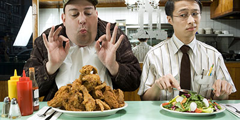

Vegetarian people argue that It is cruel and unethical to kill animals for food when vegetarian options are available, especially because raising animals in confinement for slaughter is cruel, and many animals in the United States are not slaughtered humanely. Also, they note that A vegetarian diet is more healthful than a carnivorous diet. And has high renal acid levels which the body must neutralize by leaching calcium from the bones, which is then passed into urine and lost.
On other side those who supporting eating meat says that Eating meat is natural, not cruel or unethical. Moreover,Vegetarians mistakenly elevate the value of animal life over plant life. Research shows that plants also respond electrochemically to threats. Further more, Vegetarian diets are not necessarily better for the environment. Raising beef is often the most efficient way to produce food for humans
